Solutions to Chapter 16
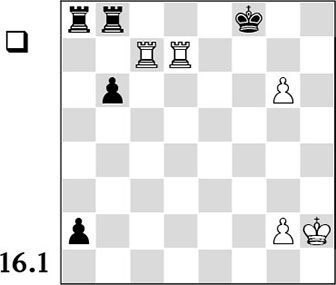
No, White does not have to settle for a draw. Although checks do not help and the mate threat after 1.♖h7? also fails to, for instance, 1…a1♕, White can still cash in the point with
1.♖g7!!
In fact it is quite simple. By keeping the black king imprisoned on f8, we turn the g-file into a kind of h-file, and the mate is unavoidable, for example:
1…a1♕ 2.♖cf7+ ♔e8 3.♖g8#
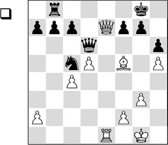
With his next move White forces the black queen to the back rank, where it will be a lot more passive than on its present square.
32.♕e8+! ♕f8
After 32…♖xe8 33.♖xe8+ ♕f8 34.♗h7+ ♔xh7 35.♖xf8 f6, White wins with 36.♖f7.
33.♕e7
As a result, the pawn on c7 has become a target.
33…♕xe7
After 33…♘a6 the knight would also be extremely badly placed, and White would be able to take his pick from the possibilities to increase his advantage. For example, 34.♕d7.
34.♖xe7 ♔f8?
Black decides to give a pawn, but this action will cost him dearly. Necessary was 34…♘a6, after which White does best to continue with 35.c5 (less good is 35.f4 ♔f8 36.♖d7 ♔e8, followed by …♖d8, and the invaded rook will be eliminated) 35…♔f8 36.♖d7 ♔e8 37.d6 c6! 38.♖c7!, keeping his opponent boxed in.
35.♖xc7 ♘a6
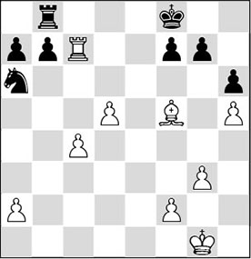
36.d6!
This one Black had missed. He thought that 36.♖d7 ♘c5 37.♖c7 (37.♖d6?? ♔e7–+) 37…♘a6 would lead to a repetition of moves.
After 36.♖c8+ ♖xc8 37.♗xc8 ♘c5, Black would accomplish a blockade on the dark squares. White can make no progress here.
36…♖d8
After 36…♘xc7, 37.dxc7 wins a piece.
37.c5 b6 38.c6!
Now White makes optimum use of his passed pawns.
38…♘b8
After 38…♖xd6, 39.♖xa7 is decisive.
39.♗e4 ♖xd6 40.♖c8+
Black resigned.
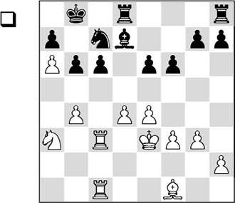
The only way to make progress is:
31.b5!
This pawn sacrifice looks logical, but the consequences had to be calculated accurately.
31…♘xb5 32.♗xb5!
White captures with the bishop, as he wants to keep his knight on the board. The reason will soon become clear.
32…cxb5 33.♖c7
The first aim, to penetrate with the rook on the seventh rank, is achieved. Still, Black’s next move appears to spoil the fun.
33…♖c8
Thus Black seems to be able to neutralize the white rooks, and the white concept appears to be a failure. Nothing could be further from the truth!
By the way, there were various other possibilities for Black, all of which could be successfully combated by White:
A) 33…♔a8 34.♖b7 ♗c8 is met by the attractive 35.♖xc8+! ♖xc8 36.♘xb5, and White wins;
B) On 33…b4, two white rooks will invade on the seventh rank: 34.♖b7+ ♔a8 35.♖cc7! ♗c8 (or 35…bxa3 – we know by now that the presence of a rook’s pawn offers the necessary point of support to give mate: 36.♖xa7+ ♔b8 37.♖cb7+ ♔c8 38.♖a8#) 36.♖xa7+ ♔b8 37.♘b5, and here also there are pretty mate patterns, like, for instance: 37…b3 38.♖cb7+ ♗xb7 39.♖xb7+, and wherever the king goes, the knight will give mate;
C) An important defence consisted of 33…♗c8! 34.♘xb5 ♖d7!! (less good is 34…♗xa6 35.♘xa7 ♗b7 36.♘b5 ♖c8 (36…♗a6 37.♖7c6!) 37.♔d2 ♖xc7 (37…♗a6 38.♖1c6+–) 38.♘xc7 ♗c8 39.d5 exd5 (39…♖d8 40.♖c6 exd5 41.♘xd5 ♔a7 42.♖c7+ ♗b7 43.♖xg7+–) 40.♘xd5 b5 41.♖c7, and White has excellent winning chances) 35.♖xd7 ♗xd7 36.♘xa7 ♔xa7 37.♖c7+ ♔xa6 38.♖xd7 ♖c8.
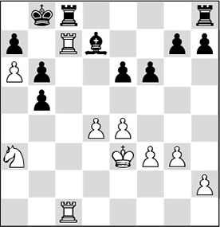
34.♖b7+ ♔a8 35.♖xd7!
This is the true point of the entire liquidation. White sacrifices an exchange, after which his rook on the seventh rank, in cooperation with the knight, is of great value.
35…♖xc1 36.♘xb5 ♖hc8
Or 36…♔b8 37.♖b7+ ♔a8 (37…♔c8 38.♘d6+ ♔d8 39.♘f7+ ♔c8 40.♘xh8) 38.♘c7+.
37.♖xg7
The rook is wreaking havoc on the seventh rank.
37…h6 38.♖xa7+ ♔b8 39.♖b7+ ♔a8 40.♖a7+ ♔b8 41.♖b7+ ♔a8 42.g4
This illustrates Black’s powerlessness. The rooks are more or less tied to the c-file (otherwise White will have ♘c7+), which allows White to take his time to strengthen his position.
42…e5 43.d5 ♖1c5 44.♖a7+ ♔b8 45.♖b7+ ♔a8 46.♖xb6 ♖b8 47.♖xb8+
Remarkably enough, White can even permit himself to swap the rooks. This is because his two passed pawns, in combination with the knight and the king, have enough concentrated power to force the win.
47…♔xb8 48.a7+
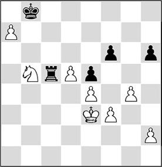
48…♔b7
Also after 48…♔a8 49.d6 ♖c8 50.♔d3 (50.♘c7+ ♔xa7 51.♘e6 ♖c3+!) 50…♔b7 (50…♖c1 51.♘c3) 51.♘c7 ♔xa7 52.♔c4, White wins on account of his far advanced passed pawn.
49.♘d6+
Another possibility was 49.d6!?, which after 49…♖c8 50.♔d3 ♖c1 51.♘c3 ♖a1 52.♘d5! would also lead to a winning position for White.
49…♔xa7 50.♘e8?!
With the alternative 50.♘f7, conquering the black h-pawn, the win could be attained a little easier. For example: 50…♖c7 51.♘xh6 ♖h7 52.♘g8 ♖xh2 53.♘xf6.
50…♔b6 51.♘xf6 ♖c3+ 52.♔f2 ♖c7 53.h4 ♖f7 54.♘h5 ♔c7
Three pawns and a knight outweigh a rook.
55.g5
Even stronger was 55.f4! exf4 56.g5.
55…hxg5 56.hxg5 ♖h7 57.♘f6 ♖h2+ 58.♔g3 ♖h1 59.♔g2 ♖h8 60.g6
Black gave up the fight, since after 60…♖h6 61.g7 ♖g6+ 62.♔f2 ♖xg7 63.♘e8+, he will be tricked to boot!
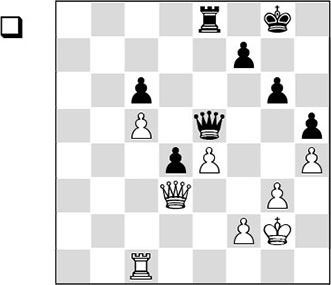
34.f3?
This is a serious positional mistake, with which White weakens his second rank – running the risk that Black can exploit this weakness, especially in an ending with major pieces.
White had to try 34.♖c4, in an attempt to save a draw in the resulting rook ending. After 34…♕xe4+ 35.♕xe4 ♖xe4 36.f3! (if anything, this is better than 36.♔f3?! ♖e5 37.♖xd4 ♖xc5, and Black has good practical chances) 36…♖e2+ 37.♔f1 ♖e5 38.♖xd4 ♖xc5 39.♔f2, Black’s winning chances are minimal.
34…♖a8 35.♕c4
Also after two other possibilities Taimanov would have had huge problems, as Timman showed in the Dutch magazine Schaakbulletin:
A) 35.f4 ♖a2+ 36.♖c2 ♖a3!, and whether White takes the queen or the rook, he will be left with a ruined position;
B) 35.♖c4 ♖a2+ 36.♖c2 ♖a1 37.♖c4 ♕b8!, and the two black pieces stage an attack on the white king that is impossible to parry.
35…♖a3!?
Again the d-pawn is sacrificed for the attack on the second rank.
36.♖d1 ♖c3
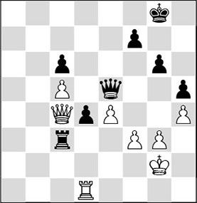
37.♕a4?
This is based on an ugly miscalculation. With hindsight, the only move turns out to be 37.♕xd4!?. After 37…♖c2+ 38.♔h3 ♕e6+ 39.g4 hxg4+ 40.fxg4 ♕a2, White miraculously does not lose:
A) 41.h5? is strongly met by 41…g5! 42.♖g1 ♖h2+ 43.♔g3
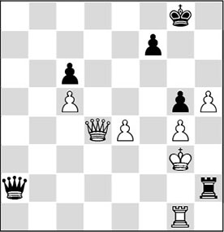
Analysis diagram
43…♖b2!. It is a beautiful sight how the black pieces carry out their destructive work from a great distance: 44.♔h3 ♖b3+ 45.♖g3 ♖b1 46.♖g1 ♕a3+ 47.♖g3 (47.♔h2 ♖b3) 47…♕c1, and the black initiative emerges victorious;
B) 41.♕d6, and now it turns out that 41…♖f2! wins for Black, for example: 42.♔g3 ♕e2 43.♕d3 ♖g2+ 44.♔f4 ♖xg4+, and White can forget about the rest;
C) White has only one good move: 41.e5!. This move, which isn’t exactly obvious, is not analysed by Timman. The intention is to give extra protection to the g4-pawn, which is always a target. 41…♖h2+ (41…♔h7 does not achieve the aim either: 42.h5 ♖h2+ 43.♔g3 gxh5 44.♔f4 hxg4 45.♖g1 ♖h5 46.♕d3+ ♔h6 47.♕d6+ ♔h7, and since his own king is now unsafe as well, Black cannot play for a win) 42.♔g3 ♕g2+ (42…♖g2+ 43.♔h3 ♕e2 appears to win on the spot, but, remarkably enough, White can save his skin with 44.h5!) 43.♔f4, and oddly enough, also here there is nothing in it for Black.
37…d3!
‘This push not only prepares a rook check on c2, it also clears the way to b2 for the black queen’, Timman writes.
38.♕xc6
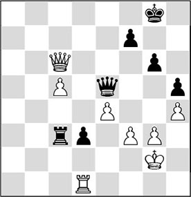
38…♖xc5?
Timman was in time-trouble, which is why he decided first to eliminate the dangerous white c-pawn. But this endangers the win.
An immediate win could have been achieved with the spectacular 38…♖c1!. After 39.♖xc1 ♕b2+ 40.♔h3 ♕xc1 41.g4 ♕f4! 42.♕e8+ ♔g7, the active position of the black queen, in combination with the strong d-pawn and White’s seriously weakened king position, decide the battle in Black’s favour.
Timman thought that the mate threat after 38…♖c2+ 39.♔h3 ♕b2 40.♖h1 would not yield anything concrete at this stage. However, the black passed pawn will decide the issue. After 40…d2, followed by …♖c1, the promotion of the pawn cannot be prevented.
39.♕a8+
The only way to stay on his feet was 39.♕b6!, so as at least to prevent Black’s queen from going to the second rank, and to control the e6-square at the same time (Taimanov, for one, claimed after the game that he could have made a draw with 39.♕b6): 39…♖c2+ 40.♔h3. In that case, Timman would have had to find the pointed 40…♖e2! on the last move of the time control, in order to bring the win within reach after all. With this move he brings the rook to the other side of the pawn, and keeps the second rank open for the time being.
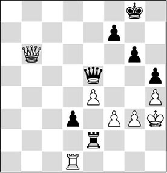
Analysis diagram
A) On 41.♖xd3, 41…♕a1 42.♕d8+ ♔h7 43.♖d1 ♕a2 decides. Again White’s second rank proves fatal to him: 44.g4 ♖g2! 45.♕f6 hxg4+ 46.fxg4 ♖f2 47.♕d4 ♖f3#;
B) 41.♕d8+ ♔g7 42.♕xd3, but now the danger comes from the other side: 42…♕e6+! 43.g4 hxg4+, and the grave can be dug for White;
C) 41.♕b3 looks clever, as both b2 and e6 remain under control, but Black again has an instructive way to win: 41…♕c5! (the queen threatens to do her demolition job not only via f2, but also via c8) 42.♕b8+ ♔g7 43.g4 hxg4+ 44.♔xg4 d2.
39…♔h7 40.♕a6
Protecting the square a6, but allowing an invasion of Black’s major pieces on the second rank.
40…♖c2+ 41.♔h3 ♕b2
The game was adjourned here, but as Timman was writing down the sealed move, Taimanov resigned.
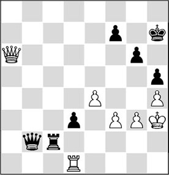
After 42.♖h1, Timman indicated that 42…♖c1 was the road to the win, liquidating to a queen ending where the d-pawn decides. Following 43.♖xc1 (43.♖h2 ♕d4) 43…♕xc1 44.g4 hxg4+ 45.♔xg4 d2 46.♕b7 ♔g7, indeed the pawn cannot be stopped.
Solutions to Chapter 17
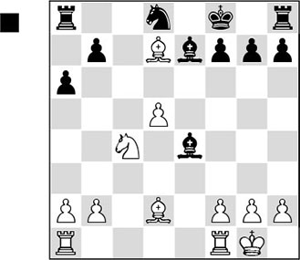
After White’s move 18.♘e5-c4, Black fell into the trap with
18…♗d3?!
Good moves are usually scarce in a bad position, but this one hastens the end. Relatively better was 18…b5, to try to free himself: 19.♘b6 ♖b8 (or 19…♖a7 20.♖fe1 f5 21.♖ac1, and White hauls in the loot) 20.♗e3, but also in that case, Black shouldn’t harbour any illusions about the outcome of the game, since his pieces still cannot be developed.
19.♘b6!
This is what it was all about. The rook on a8 is deactivated.
19…♗xf1 20.♔xf1
White has had to invest an exchange, but from here on, the black pieces are no longer able to do anything.
20…♖a7
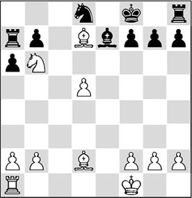
A horrible square for this piece – the second rook has been deactivated too. Since the black knight has no squares either, and he has only one piece left with which to move, White decides to prevent that too.
20…♖b8 fails to 21.♗f4.
21.♖e1!
Now the bishop cannot move either in view of 22.♖e8. Also, 22.d6 is a deadly threat. A nice example of restriction of the opponent’s activity. Black could have resigned here.
21…g6
After 21…f6, 22.♘c8! was an elegant way to finish off.
22.♗h6+ ♔g8 23.♖xe7
1-0
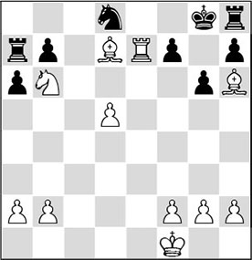
All Black’s pieces are inactive, whereas all White’s pieces are going at full blast! Black surrendered. A possible finish would be 23.♖xe7 f5 24.♗xf5 gxf5 25.♘d7 followed by 26.♘f6.
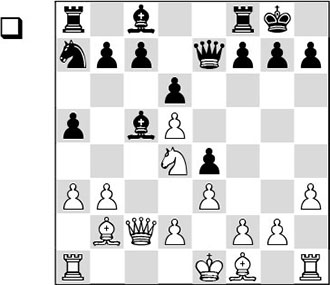
White wants to transfer the battlefield to the kingside. He does this because Black has two pieces (the knight on a7 and the bishop on c5) that will not be able to exert any influence there. Therefore, he does not allow Black to get rid of one of his misplaced pieces.
13.♘e2! f6
Sooner or later Black has to commit this weakening. Now White has obtained a target for a pawn storm. First he brings the rest of his pieces into the game.
14.♘f4
Here the knight is beautifully placed.
14…♗d7 15.♗e2
White could have considered making use of the strong point that has become available. If Black is forced to give up his light-squared bishop, White has nice compensation. An illustrative variation: 15.♘e6!? ♗xe6 16.♕xe4 ♖ae8 17.dxe6 c6 18.♕c2 ♔h8 (18…♕xe6 19.♗c4 d5 20.♗d3) 19.♗c4 d5 20.♗d3 g6 21.b4 ♗d6 22.h4, with beautiful compensation.
15…c6 16.h4 ♔f7
The king runs for it, as there is nothing sensible to be found against the simple plan of g2-g4, ♖h1-g1, ♕c2-c3 and g4-g5, after which the superior numbers of white pieces will decide the game quickly. After 16…♖f7 White will continue on the chosen path: 17.g4 ♘b5 18.♖g1 ♘c7 19.♗c4 b5 20.dxc6 bxc4 21.cxd7 cxb3 22.♕xb3 ♕xd7 23.g5 fxg5 24.♖xg5, and White is doing fine.
17.g4 ♔e8 18.♖g1 ♔d8 19.g5
Also without the presence of the enemy king White’s plan is successful.
19…♔c7?
An error in a bad position. Incidentally, Black faced a well nigh impossible task to keep the intruders from his territory. The main threat, 20.gxf6 gxf6 21.♘h5, intending 22.♖g7, cannot be dealt with in a satisfactory way.
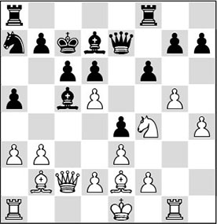
20.b4?!
The right idea – in the wrong move order. It is a pity that White does not take full profit from the opportunity presented to him. Now Black can still try some ‘swindles’. White should have inserted 20.gxf6 gxf6 here, but 20.g6! is absolutely the strongest move. After 20…h6 the blow is dealt on the other side: 21.b4!.
20…axb4 21.axb4 fxg5 22.♖xg5
Probably, 22.bxc5! would have been immediately decisive. After 22…gxf4 23.♖xg7 ♕e8 24.cxd6+ ♔b8 25.♗d4 ♘c8 26.♖xa8+ ♔xa8 27.♕a2+ ♔b8 28.dxc6 ♗xc6 29.♗g4!, Black’s house comes tumbling down.
22…♖xf4!?
After 22…♗xb4 White wins a piece, since both cxd7+ and ♘d5+ are threatened. Now Black can play on by sacrificing an exchange.
23.exf4 ♗xb4 24.♖xg7 ♕xh4 25.♕xe4
White opts for centralization. More to the point was 25.dxc6 bxc6 26.♕a4 ♗c5 27.♕a5+ ♗b6 28.♖xd7+, and it is all over.
25…♗c5 26.♗g4 ♕xf2+ 27.♔d1 ♖d8 28.♗f6!
Putting the question to the most important defender.
28…♖f8 29.♖xd7+ ♔b8 30.♕a4?
Very careless. White could have crowned his attacking game fittingly with 30.♖xb7+!! ♔xb7 31.♕e7+ ♔b6 32.♕xa7+ ♔b5 33.♕a6+ ♔b4 34.♖b1#.
30…♕g1+ 31.♔c2 ♕xg4 32.dxc6!
Now the game is over after all. Black resigned. After 32…♕f5+ 33.d3 bxc6 34.♖b1+ ♔a8 35.♖xa7+ ♗xa7, White gives mate with 36.♕xc6#.
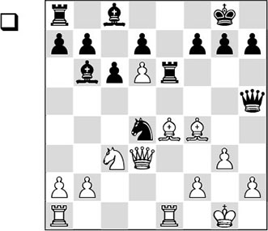
By pushing his d-pawn to d6, White has seriously impeded Black’s development. The pawn cuts the black position into two camps, as a result of which the latter’s piece coordination has been completely disrupted. In order to exploit Black’s lack of activity, White must continue powerfully.
25.♘a4!
Threatening the strongly placed black knight. The most important guideline that White is following is to trade off the opponent’s active pieces, leaving him with nothing but passive ones.
25…f5
A principal variation that had to be calculated is 25…♗a5 26.♕xd4 ♗xe1 27.♖xe1 f5 28.♘c5 ♖e8 (on 28…fxe4 White has 29.♘xe6 dxe6 30.d7+–).
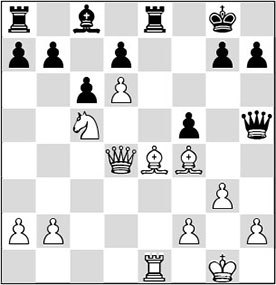
Analysis diagram
And now the beautiful 29.♗d5+! cxd5 30.♖e7 ♖xe7 (30…♕g6 does not offer any solace either: 31.♕xd5+ ♔h8 32.♘d3!, and the difference in activity decides) 31.dxe7 d6 32.♕xd5+ ♔h8 33.♕xd6 ♕e8 34.♕d8, winning.
26.♘xb6 fxe4 27.♕xd4 axb6 28.♖xe4
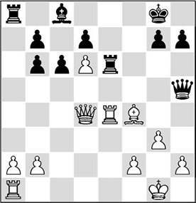
Although there is a material balance, White is clearly better. This is mainly caused by the misplacing of Black’s pieces on the queenside, especially the bishop on c8. For the time being, the pawn on d6 prevents this bishop from being brought into play.
28…♕c5
Also after 28…c5 29.♕d3 ♕f5 30.♖ae1, White holds all the trumps.
29.♕d3!
White should not follow his guideline at all times. Flexible thinking is always essential on the rocky road to success. The exchange of queens and rooks would not yield White what he has in mind: 29.♕xc5 bxc5 30.♖xe6 dxe6 31.♗e5, and although White’s bishop is still stronger than Black’s, Black has managed to untie himself a little. Also, the presence of opposite-coloured bishops increases the drawing margin.
29…♕f5 30.♖ae1 ♖a4
After 30…♖xa2 31.♖1e3!, with the threat 32.♖xe6, White maintains his advantage.
31.f3 h5
Now, after 31…♖xa2, White should react with 32.♕b3.
32.♕b3 ♖xe4 33.fxe4 ♕c5+ 34.♔g2 g5?!
It is understandable that Black tries to get rid of the pawn on d6, which has been a thorn in his flesh for so long. However, the weaknesses on the kingside are irreparable, and Timman succeeds in exploiting them in a beautiful manner. The alternative 34…b5 is met by 35.e5, with which Black is hemmed in even further.
35.♗e3 ♕xd6 36.♗xg5 ♕c5
If he had known how White was going to continue here, he would have played 36…♕d4.
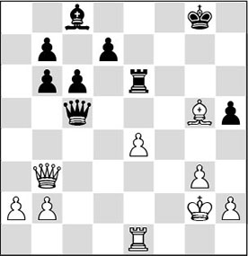
37.♗f6!
An outstanding square for the bishop.
37…d5
Finally the bishop on c8 comes to life, but it is too late.
38.e5 ♕d4?
Now the events unfold quickly. An attempt at defence was 38…♕c4 39.♕xb6 ♖e8 40.♕e3 ♕g4, and now the prophylactic 41.♔g1!, preparing, among others, ♖f1 (without allowing the queen swap on e4), whereas 38…♗d7 is met by 39.♕d3 ♗e8 40.♕f5.
39.♕c2
Since Black cannot defend against the annoying threats White has created, he resigned. Curiously, his bishop is still on its original square c8!
A possible finish is: 39.♕c2 ♔f8 40.♕g6 ♕xb2+ 41.♔f1 ♕b5+ 42.♖e2, and White wins.
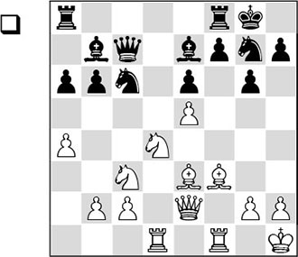
White has set his sights on the black knight on g7, which wants to make the strong jump to f5. He starts with a cleaning operation.
17.♘xc6! ♗xc6 18.♕c4!
White wants to trade off Black’s active pieces, leaving Black with only a few passive ones.
18…♖fc8
After this move White will get what he wants. With the intermediate move 18…♘f5!? Black could have tried to put a spoke in White’s wheels. After 19.♗c1 ♖ac8 20.♕xc6 ♕xc6 21.♗xc6 ♖xc6, there is a more or less forced variation which favours White: 22.g4 ♘h4 (after 22…♘g7, the same nightmare as in the game would loom up before the black player’s eyes!) 23.♖d7 ♖e8 24.♖xe7 ♖xe7 25.♗g5, and White gains two pieces for a rook. Whether he can actually win this remains questionable after 25…♖d7 26.♗xh4 ♖c4 27.h3 h5.
19.♕xc6 ♕xc6 20.♗xc6 ♖xc6 21.♖d7 ♖e8
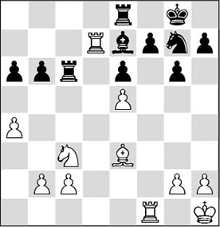
22.g4!
This is what the white player had been aiming for all along. The knight on g7 cannot actively take part in the struggle.
22…h5 23.h3 hxg4 24.hxg4 b5
An attempt at counterplay. The alternative is 24…♖c4, but then White simply plays 25.♗d4, maintaining his advantage.
25.axb5 axb5 26.♘e4!?
Geller has calculated that he will win material. Also after 26.♘xb5 ♖xc2 27.♘d6 ♗xd6 28.exd6, Black would have had hardly any prospects.
26…♖xc2 27.♘f6+ ♗xf6 28.exf6
The black knight is marked for death, and this means that White can cash in.
28…♖xb2
Black could have put up some stiffer resistance with 28…♘f5 29.gxf5 exf5, but after 30.♖f2 ♖xf2 31.♗xf2, he would not be able to save his skin either.
29.fxg7 f5
This way it looks as if Black can flounder on a little longer, but Geller has looked further than the end of his nose.
30.♖f3! fxg4 31.♖f4 ♖c8 32.♗c5!
With this beautiful final move, reducing all counterplay to zero and at the same time introducing the deadly threat 33.♖f8+, Geller forced his opponent to capitulate.
Solutions to Chapter 19
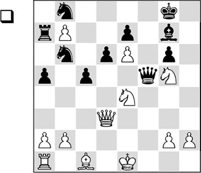
21.♕b5!
White makes optimum use of the lack of cooperation in the black camp.
An even more incredible turn is 21.g4!!. If you have thought up this one, you can write down a few bonus points! The queen is the most important defender of the black king, and it is now lured away from its most important tasks: 21…♕xg4 22.♘f6+! (the consequence of the previous move) 22…exf6 (22…♗xf6 leads to mate: 23.♕xg6+ ♗g7 24.♕f7+ ♔h8 25.♕e8+ ♗f8 26.♕xf8#) 23.e7.
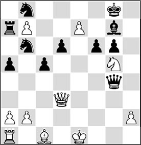
Analysis diagram
This move is the real point of the combination: thanks to the unfortunate positions of the black pieces, the pawn breaks through.
Please note how important the pawn on b7 is: it keeps the rook inactive for a little longer.
23…♕d7.
Senseless would be 23…♕g1+ 24.♕f1 ♕xf1+ 25.♔xf1, and the pawn can no longer be kept from promotion.
24.♕e4!. In this way White not only protects the pawn, but he also threatens to queen again. 24…♕e8 25.♕e6+ ♔h8 26.♕h3+ ♔g8 27.♕h7# would be a fitting conclusion to a highly original combination.
21…♖xb7
Otherwise Black will lose a knight.
22.♕e8+
The white queen pays a visit via the back door.
22…♗f8
After 22…♕f8 23.♕xg6, the white queen has managed to get hold of the g6-pawn by means of a detour. Now, in the event of 23…♕c8, White has to look for an optimum cooperation between his pieces.
24.♘g3! turns out to be the cleverest continuation. After 24…♘c6 25.♘f5, the mate is unavoidable.
23.g4!
This move wasn’t hard to find.
23…♕e5
1-0
After 24.♕f7+ ♔h8 25.♕h7, it is mate!
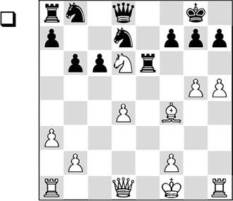
If a knight has invaded the enemy position, we speak of an ‘octopus’. Here, the knight on d6 spreads its ‘tentacles’ in enemy territory.
18.d5!
The line 18.g6 fxg6 19.hxg6 h6 20.♕b3 ♘f8 21.♖e1 was also definitely worthy of attention. Now, in two variations White conjures up a miraculous form of cooperation: 21…♕d7
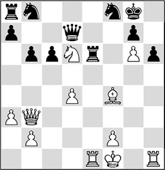
Analysis diagram
22.♖xe6 ♘xe6 (22…♕xe6 23.♘f5!! ♕xb3 24.♘e7+ ♔h8 25.♖xh6+ gxh6 26.♗e5#) 23.♗xh6!!. A sound thrashing! Now:
A) 23…♕xd6 runs into 24.♗g5!. The bishop covers the important escape square e7, after which the blow falls along the h-file: 24…♕d5 25.♖h8+! ♔xh8 26.♕h3+ ♔g8 27.♕h7+ ♔f8 28.♕h8#;
B) 23…gxh6 24.♘f5!. Again the knight emerges on this beautiful square. Together with the pawn on g6 the knight covers four crucial squares on the seventh rank, again preventing Black defending against the invasion along the h-file. For example: 24…♘a6 25.♕h3, and Black cannot meet the threat of 26.♕xh6 anymore.
18…♖xd6
A desperate sacrifice with which Black hopes to stay in the game.
19.♗xd6 ♕xg5 20.♕f3!?
Even better was 20.♖c1!, bringing his last piece into the game. This would also have preserved the pressure.
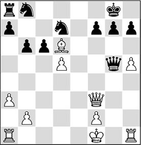
20…♕xd5
Black decides to trade queens. But as a result, he is left with only passive pieces that are in each other’s way as well.
Still, keeping the queens on the board wouldn’t exactly have brought any relief either: 20…cxd5 21.♖g1 and now:
A) With 21…♕d2 the queen will land on the wrong track. White then has an ingenious winning method at his disposal: 22.♖d1 ♕c2 23.♖xd5 ♕c4+ 24.♔g2 ♘c6 25.b3 (here the queen definitively falls into decline) 25…♕c2 (now White has a highly instructive winning method, gaining material. But after 25…♕a6 26.♖g5 ♕b7 27.♖xg7+! Black ends up in a mating net: 27…♔xg7 28.♔h2+ and game over) 26.♖d4! (threatening 27.♖c4) 26…b5 27.♖e4! and the threat of 28.♖e2, catching the queen, can only be prevented by 27…h6, but then there follows 28.♖e2 ♕h7 29.♕xc6, after which it is also over;
B) After 21…♕d8, White brings his armed forces into play in no time with 22.♕xd5 ♘a6 and 23.♖e1. The black pieces are not in a position to prevent a final offensive, for example: 23…♘f6 24.♖xg7+! ♔xg7 25.♕g5+ ♔h8 26.♗e5 and it is all over.
21.♕xd5 cxd5 22.♖c1
Of course, preventing the knight from being developed to a central square.
22…♘a6 23.b4!
Keeping the black pieces tied up. The knight on a6 has become Black’s main source of worry.
23…h6 24.♖h3 ♔h7 25.♖d3 ♘f6 26.b5
White decides to win back a pawn, after which the win becomes a technical job.
26…♘c5 27.♗xc5 bxc5 28.♖xc5 ♖b8 29.a4 ♖b7 30.♖dc3
And since the rook swap is inevitable, Black surrendered. It is clear that 30…♘e4 is met by 31.♖c7.
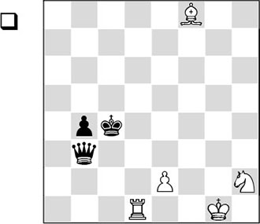
White has to make his pieces cooperate. He starts by sacrificing a rook!
1.♖d4+!
Tempting was 1.♖c1+?, but after 1…♔b5 2.♖c5+ ♔a4 3.♖f5 ♕g3+ 4.♔h1 b3, the danger for Black is over. Also after 1.♖d3? ♕b2 2.♔f2 ♕f6+ 3.♖f3 ♕d4+ 4.♔g2 b3, White cannot do business.
1…♔xd4
Black has to capture, since after 1…♔b5 2.♖xb4+ it would be very easy for White.
2.♘f3+ ♔d5
The only way to avoid direct knight forks. After both 2…♔e3 3.♗h6+ ♔xe2 (3…♔e4 4.♘d2+) 4.♘d4+ and 2…♔c3 3.♗g7+ ♔c2 (3…♔c4 4.♘d2+) 4.♘d4+, he would be treated to a knight fork.
3.e4+
But White is not to be caught out so easily. The black king is now driven to a fatal square where it falls victim to a fork after all.
3…♔c6
3…♔e6 4.♘d4+; 3…♔xe4 4.♘d2+; 3…♔c4 4.♘d2+.
4.♘d4+
1-0
Curiously, the knight that was so far away on h2 in the starting position, now plays the starring role in the final position!
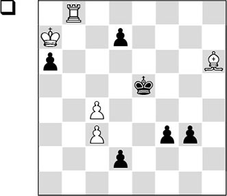
White eliminates a pawn that has broken through, but then faces two others.
1.♗xd2 f2!
As a rule, two pawns on the sixth rank outweigh a rook.
2.♗e1!
A beautiful idea.
2…f1♕
Clearly, 2…fxe1♕ fails to the X-Ray check 3.♖e8+.
3.♖e8+ ♔d6
For obvious reasons, the king cannot move to the f-file.
4.♗xg3+
But in the centre it will end up in a mating net.
4…♔c5 5.♖c8#
A true masterpiece by Rinck, where the control of squares is combined with marvellous cooperation of the white pieces.
Solutions to Chapter 20
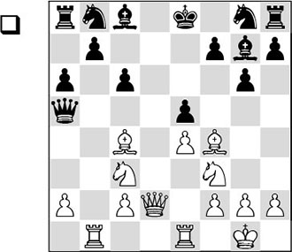
In this position Tal played
13.♕d6!
exploiting his lead in development. The former World Champion forces his opponent to take one of the two pieces, since with his last move he has created a few nasty threats (♘c3-d5!).
13…♕xc3
Capturing the bishop will end badly for the black player: 13…exf4 14.♘d5! ♘d7 (14…cxd5? 15.exd5+, and after the opening of the e-file Black won’t be able to hold; or 14…b5 15.♘c7+, and again White wins on the spot) 15.♘g5!
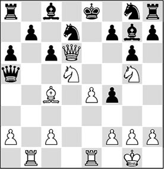
Analysis diagram
15…♘e5 (after 15…♗e5? White gives mate in three: 16.♘c7+ ♕xc7 (16…♔d8 17.♘xf7#) 17.♗xf7+ ♔d8 18.♘e6#) 16.♘c7+ ♕xc7 17.♕xc7, and White has gained back his material with interest.
It looks logical to erect a ‘wall’ on which White can try to bang his head with 13…f6, but this ‘wall’ is brilliantly broken down: 14.♖xb7! ♗xb7 15.♕e6+, and now:
A) 15…♔d8 16.♖d1+ ♔c7 17.♕d6+ ♔c8 (Black is mated more quickly after 17…♔b6 18.♗e3+) 18.♗e6+, and mate follows;
B) 15…♘e7 16.♕f7+ ♔d8 17.♖d1+ ♘d7 18.♗e6 ♗c8 19.♕xg7, and there is no salvation for Black. Here’s an example of how White can finish the slaughter: 19…♖e8 20.♕xf6 exf4 21.♘e5 ♔c7 22.♗xd7 ♕xc3 23.♕d6+ ♔b6 24.♖b1+ ♔a5 25.♘c4+ ♕xc4 26.♕a3+ ♕a4 27.♕c3+ and mate.
14.♖ed1!
Mobilizing his second rook, and increasing the number of threats.
14…♘d7
After this move the combination follows that is running like a leitmotiv through this jumble of variations.
14…♗f6 15.♘xe5! ♗e7 also runs into the typical sacrifice 16.♗xf7+! ♔f8 17.♕c7, and there is no way for Black to get out of this hornets’ nest either; in case of 14…♕a5 White has prepared another surprise attack in broad daylight: 15.♖xb7! ♗xb7 16.♗xf7+ ♔xf7 17.♘g5+ ♔e8 18.♕e6+ ♘e7 19.♕f7#. White’s pieces are cooperating most artistically.
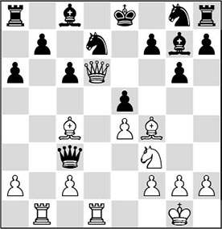
15.♗xf7+! ♔xf7 16.♘g5+ ♔e8 17.♕e6+
And Black resigned.
After both 17…♘e7 18.♕f7+ ♔d8 19.♘e6# and 17…♔d8 18.♘f7+ ♔c7 19.♕d6#, Black is mated.
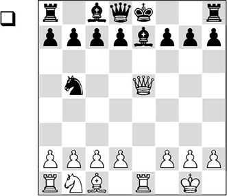
This position, which is still known from an obscure opening line, yields White a quick win.
9.♕xg7! ♖f8 10.a4! ♘d6
White is still a piece behind, but the threat of ♘c3-d5 is in the air.
11.♘c3 ♘f5?
Black caves in quite quickly. The only move was 11…c6, but after 12.♕f6! ♘c4 13.d3, White wins back his piece with interest.
12.♘d5! f6 13.♕xh7 d6 14.♕g6+
And Black resigned.
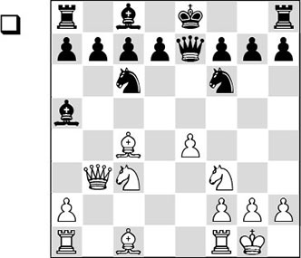
Almost all the players in the world have availed themselves of the Evans Gambit at least once in their career. The first unofficial World Champion, Paul Morphy, frequently employed the gambit, and he has left many interesting attacking games to posterity. His fellow countryman Bobby Fischer once wrote that he considered Morphy to be one of his great heroes, and Fischer also couldn’t refrain from digging up the gambit every once in a while.
In this position White has already sacrificed two pawns, so he will have to take some drastic measures in order to obtain compensation for them.
10.♘d5!
With this move Fischer disturbs the cohesion between the black pieces, and succeeds in opening the e-file.
10…♘xd5
To 10…♕xe4 White has also prepared a fitting reply: 11.♗g5!. After 11…♘xd5 12.♗xd5 ♕g6, White sacrifices an exchange in order to drive the black king definitively into a corner: 13.♖fe1+ ♗xe1 14.♖xe1+ ♔f8 15.♕e3, and Black must give up the queen, because 15…f6 fails to 16.♗xc6 dxc6 17.♕e7+ ♔g8 18.♕d8+ ♔f7 19.♖e7#.
11.exd5 ♘e5
After 11…♘d8 12.♗a3 d6, White wins a piece with the simple 13.♕b5+.
12.♘xe5 ♕xe5
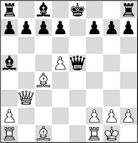
13.♗b2
If we take a glance at this position, we see that White has mobilized virtually his entire force, whereas Black still has various problems. Apart from the main point that his king is still in the centre, he experiences great problems with the development of his queenside. Therefore, his lack of activity will soon prove fatal to him.
13…♕g5?!
After this move the white attack runs like clockwork. Black should have prevented a rook from coming to e1 as long as possible, for instance with 13…♕e4 14.♗xg7 ♖g8 15.♗d3, and now:
A) After 15…♕f4?!, events develop very quickly again: 16.♖fe1+! (in this position White should not be afraid to sacrifice an exchange) 16…♗xe1 17.♖xe1+ ♔d8.
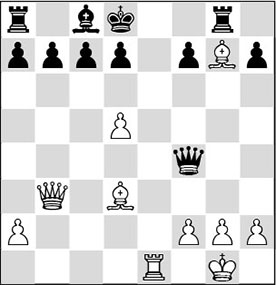
Analysis diagram
And now White has the artistic 18.♕b4!! up his sleeve. An instructive swap. White exchanges one of his opponent’s active pieces, who will now have to compete with an entire white army;
B) After 15…♕e7, White must determine how he wants to maintain the initiative: 16.♗c3! (also attractive is 16.d6!? cxd6 17.♗c3 ♕g5 18.g3 ♗xc3 19.♕xc3 ♕g7 20.♖fe1+ ♔f8 21.♕b4 ♕f6, but Black is still in the game here) 16…♗xc3 17.♕xc3 ♔f8 18.♖ae1 ♕g5, and now 19.♗e4! is the strongest move. White keeps the third rank open for a rook. 19…c6 (bitter necessity; 19…d6 fails to 20.♕xc7) 20.♖e3! and Black will not be able to cope with the many threats.
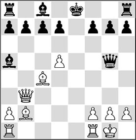
14.h4!
Again the correct strategy: keeping the opponent busy. Fischer carries this out perfectly.
14…♕xh4
Black allows his structure to be blown apart. Also after 14…♕h6 15.♕a3, intending 16.♖ae1+, the game is decided immediately.
The other move, 14…♕g4, in order at least to protect the pawn on g7 for a little longer, again fails to 15.♕a3! d6 (after 15…♔d8 16.♕xa5 ♕xc4 17.♗xg7, the black position falls to pieces) 16.♕xa5 ♕xc4 17.♗xg7 ♖g8 18.♖ac1 ♕g4 19.♖fe1+, the white attack again strikes home. Please note that White has brought all his pieces into play, whereas Black still hasn’t been able to complete his development.
15.♗xg7 ♖g8 16.♖fe1+
The last pieces are brought into play.
16…♔d8
Black gets an exchange into the bargain, but it doesn’t make any difference: 16…♗xe1 17.♖xe1+.
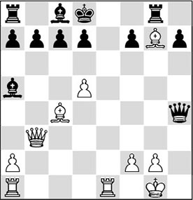
17.♕g3!
A beautiful final move. After 17…♕xg3, 18.♗f6# would be a fitting conclusion.
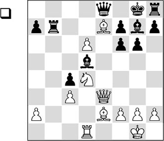
White has invested an exchange because he is fully developed. Black faces the major problem that his h8-rook cannot be brought into play, and that his pieces do not coordinate. There are bound to be tactical devices with which this surplus can be converted into something concrete.
23.♘f5!
With this move Black is kept busy, so that he has no time to work on the improvement of his position.
23…♗e6?
23…♗c6!? 24.♘xg7 (remarkably enough, this swap, with which White appears to solve Black’s problem of his passive pieces on the kingside, is White’s best chance) 24…♔xg7 25.♖e1! (White’s idea is to work with the threats ♕d4 and in some cases even ♗xf6+. For this purpose, the white rook must be placed on the e-file first) 25…g5 26.h4 gxh4 27.♗g4! (White protects the f5-square, now threatening ♗xf6+ ♔xf6 followed by ♕h6).
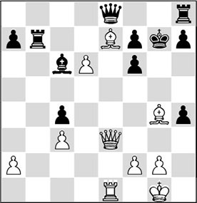
Analysis diagram
27…h6 (27…♖xe7 28.dxe7) 28.♕d4, and the threat of ♕xf6 or ♗xf6 cannot be parried in a decent way.
23…gxf5 looks relatively better, but after 24.♖xd5 ♖b1+ 25.♗f1 ♕d7, White has the strong 26.♖c5! ♖b7 27.♗xc4, after which there is no more hope.
24.♘xg7!
This does not look logical; White lends his opponent a helping hand with the development of his kingside. However, this swap is based on a nice combination.
24…♔xg7 25.♗xf6+! ♔xf6 26.♕d4+ ♔g5
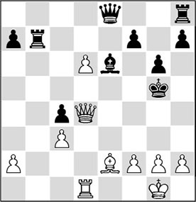
27.♕g7!
During the game, a teammate directed my attention to a striking resemblance with the combination from the famous Petrosian-Pachman game.
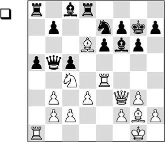
In this position Petrosian carried out a combination with a highly original point.
19.♕xf6+!!
Driving the king out into the open.
19…♔xf6 20.♗e5+ ♔g5 21.♗g7!
After this beautiful quiet move it is all over. Mate is forced.
Back to our game.
27…♗g4 28.♖d5+ f5 29.h4+!
Black resigned, as mate is inevitable. For example, 29…♔h5 runs into 30.♖xf5+ gxf5 31.♕g5#, and 29…♔xh4 30.♕h6+ ♗h5 31.g3+ ♔h3 32.♗f1+ ♔g4 33.♕f4 is also mate.
Solutions to Chapter 21
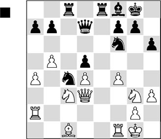
22…♗b4!
The white knight on c3 fulfils an important defensive role in the centre, and it is chased away by the text move.
23.♘d1
Otherwise Black trades off his bishop for the knight, and follows up with …♘f6-e4, ending up with a good knight versus a bad bishop. After 23.♘ce2, 23…h5! is a strong move. The other guardian of the e4-square threatens to be expelled, and obviously 24.h4 will result in lethal weaknesses on the light squares.
23…♘e4 24.f5
White tries to give his bishop some more elbow room.
24…♘xg3
It was more useful to start with 24…♗e7, after which the bishop can take up an important position on f6.
25.♕xg3 ♗d6 26.♕f3 ♗e7
Parrying the threat of f5-f6.
27.♕g3?!
Better was 27.♘c3 ♗f6 28.♕d3, after which Black would still have something to prove.
27…♗f6 28.♗xh6
This cannot hurt Black one bit. Thanks to his strong central position, he has nothing to fear.
28…♗xd4+ 29.♔h1 f6
Another interesting plan was 29…♗e5!? 30.♕g4 ♘d6 31.♗d2 ♘e4 32.♗f4 ♕c7, and here also, the centralized black pieces rule the roost.
30.♗c1 ♖e4!
The triumph of centralization! The pressure radiated by the black pieces soon becomes too much for White.
31.♕d3 ♘e5 32.♕b1 ♖c4
This may not even be the best move, but Botvinnik must have played it with relish.
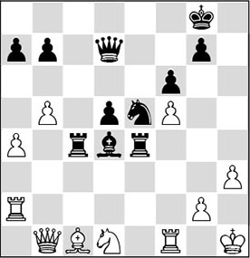
33.a5
The beautiful point is that after 33.♗d2 ♕d6 34.♕b3, Black plays the aesthetically sound 34…♕c5!, completing the centralization.
33…♗c5 34.b6 a6 35.♘b2?
Here also, 35.♗d2 is the only move to stay alive, although also in that case, Black would maintain a large advantage with 35…♖e2.
35…♖c3
There is nothing wrong with this move in itself, but there was something more concrete with which Black could have taken control of the game.
With 35…♕b5!, Black could have made optimum use of White’s bad 35th move, for example: 36.♗d2 ♖c2! 37.♖d1 (37.♕xc2 ♕xf1+ 38.♔h2 ♕g1+ 39.♔g3 ♗f2#) 37…♕b3 38.♕a1 ♕g3, with the threats of 39…♘f3 and 39…♘g4.
36.♗d2 ♖b3 37.♕c2 ♕b5 38.♖c1 ♗f8 39.♖d1 ♖e2
The career of the central pieces has been a successful one: the black pieces dominate the entire battlefield, whereas all of White’s pieces are misplaced.
40.♕c1
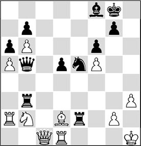
40…♖xh3+!
That was bound to happen, of course. The white king now falls prey to the hungry black pieces.
41.gxh3 d4!
0-1
There is no remedy to the threat of 42…♕d5+, followed by mate.
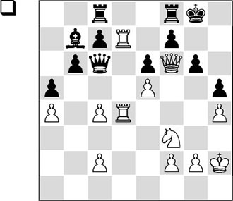
Timman saw a little too late what his opponent wanted to undertake in this position.
32.♔g3!
The start of an incredible king march. With a board full of pieces, the monarch is on his way to the square h6, where he helps to construct a mate.
32…♖ce8 33.♔f4!
It is well-known that the king is a strong piece in the endgame, but that it could lend a hand in a mating attack is less obvious. The king manoeuvre is made possible by the strongly-centralized white pieces.
33…♗c8 34.♔g5 ♗xd7
Now 34…♔h7 is met by 35.♕xg6+ ♔h8 36.♕h6+ ♔g8 37.♔f6!, and again the white king has the final word.
35.♔h6
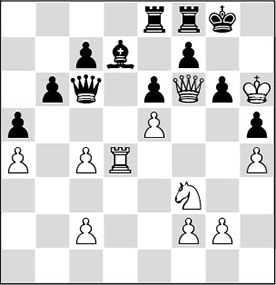
Black resigned.
A highly original concept.
QO 11.4 (D43)
1.d4 d5 2.c4 e6 3.♘c3 c6 4.♘f3 ♘f6 5.♗g5 ♘bd7 6.cxd5 exd5 7.e3 ♗d6 8.♗d3 ♘f8 9.♘e5 ♕b6 10.0-0 ♗xe5 11.dxe5 ♘g4 12.♕a4 ♕xb2 13.♖ac1 ♗d7
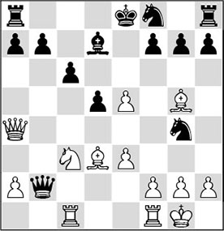
14.♕d4!!
With this ‘super-centralization’, White creates no less than five direct threats:
15.♘xd5 ♕xd4 16.♘c7#; 15.♘b5 ♕xd4 16.♘c7/d6#; 15.♘e4 ♕xd4 16.♘d6#; 15.♖b1 ♕a3 16.♖xb7; 15.e6 ♗xe6 16.♕xg7. It is clearly impossible for Black to defend against so many threats at the same time.
White could also have changed tack with 14.♖c2!? ♕b6 15.♖b1 ♕c7, and now:
A) Not the attractive 16.♘xd5?! in view of 16…♕xe5, and Black gets the upper hand;
B) Also after 16.♗f4 ♘e6, Black easily stays on his feet, since 17.♘xd5? fails to 17…cxd5;
C) But after the amazing 16.♕b4! (a move that is not given by Dvoretsky in his excellent book Secrets of Chess Tactics) 16…♕xe5 (forced, since after 16…♗e6, 17.♘b5 wins on the spot), White has the strong 17.f4!. After 17…♕xe3+ 18.♔h1, the mate threat on e7 will prove fatal to Black: 18…f6 19.♖e2 and Black loses his queen.
14…f6 15.exf6 gxf6?!
15…♘xf6 was preferable, but after 16.♗xf6 ♘e6 17.♕h4 gxf6 18.♕xf6 ♖f8 19.♕e5, the same fate would have befallen Black.
16.♗xf6 ♖g8
Now 16…♘e6 is impossible as the ♘g4 is hanging. After 16…♘xf6 17.♕xf6 ♖g8, 18.♘xd5 wins.
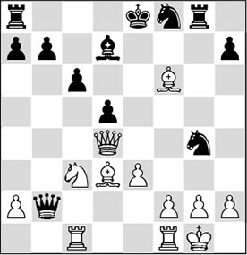
17.♘b5!
White plays another trump card.
17…♕xb5
17…♕xd4 18.♘d6 is still mate!
18.♗xb5 ♘e6 19.♕b2 cxb5 20.♗h4
And since Black will end up with too little material, he resigned.
If the opponent’s pieces are on one side of the board, it is often a good strategy to head in the other direction. That was what Sokolov did when he played:
24.♕g4
Attacking the vulnerable g7-point.
24…g6
The only move.
25.♕g5!
The neat point. The queen strives for the beautiful central square e5, where it supports the mating attack optimally. Since the d5-knight may never leave its post as then the long diagonal can be opened with d4-d5, it has become impossible for Black to use his misplaced pieces for the defence.
25…♗xe1
Black wants to ‘die with a full stomach’. He could also have tried to protect the e5-square with 25…♘c4, but then 26.♕h6! would have brought on the decision: 26…gxh5 27.♘g5, and if Black protects the weak point h7, the long diagonal will be his undoing: 27…♘f6 28.♘xh7! ♘xh7 29.d5+ and mate.
26.♕e5+ ♖f6
Even worse is 26…♘f6 27.♕xb5 ♘xh5 28.d5+ ♘g7 29.♕b2.
27.♘exf6 ♘c4 28.♕xe1 gxh5
White has prepared another strong reply.
29.♗d7
Black gave up the fight, since after 29…♕a5 30.♕e8+ ♔g7 31.♘xh5+ ♔h6 32.♕e6+! ♔xh5 33.g4+ ♔g5 34.h4+! ♔f4 (34…♔xh4 35.♕h6#) 35.♕f5#, he is artistically mated. If White had wanted to finish the game in style, he could have opted for another centralizing queen move: 29.♕e4 ♘xf6 30.d5 ♔g7 (30…♘b2 31.♕e5) 31.♕f5, and mate is inevitable.
Solutions to Chapter 22
In this position White came up with the pointed
39.♖xe8! ♖xe8 40.♕h3!
The queen threatens to enter the black lines with gain of tempo.
40…♗f6?!
A perfectly logical move, but Black should have defended with the venomous 40…g4!, to disturb the cooperation between the white forces temporarily. After 41.♗xe8+ ♔xe8 42.♕h5+ ♔d7, the white queen will pay a visit nevertheless, and Black will taste defeat. For example: 43.♕f7 ♔c8 44.♕e8+ ♗d8 45.♕c6+ ♖c7 (not 45…♗c7 46.f6! gxf6 47.♖xg4 and White breaks through) 46.♕xd6, and virtually all of Black’s pawns will be eaten.
41.♗xe8+ ♔xe8 42.♕h8+ ♔d7 43.♗xg5
Exchanging the most important defender, in order to give White’s major pieces free rein.
43…♔c7
Black tries to run for it, but his king will not reach safety. 43…♕b8 is no alternative on account of 44.♕h7!, after which the white threats are too strong: 44…♔c8 (44…♗d8 45.♗xd8 ♔xd8 46.f6!, and the breakthrough will secure the win for White; 44…♕e8 45.♗xf6) 45.♗xf6, and the bishop cannot be recaptured under penalty of mate.
44.♗xf6 gxf6 45.♖g7+ ♔b6 46.♕d8+ ♔a6
47.♕e8!
After this measured reply, it is all over.
47…♔a5
The rook is taboo in view of 48.♕b5#, and the threat of 48.♕xa4+ can only be parried by 47…♔a5, after which 48.♕c6! is a killer.
In the year 2000, chess computers weren’t as strong as they are today, but the Dutch Chess Federation thought it would be a good idea to let the strongest program in the world at the time (developed by the Dutch programmer Frans Morsch) participate in the struggle for the national title. Despite a lot of commotion, the program took part in the tournament.
The white player had seen before this game that computers played very badly in closed positions (as they do even today!). So he strove for a closed position early in the game, to patiently prepare a decisive blow. Especially seeing that the black king is in trouble here, it seems very logical for White to direct his attention to the kingside with
19.♕h5!
By this strong move, White wants to create a mate threat with g5-g6. That will force the weakening reply …h7-h6, enabling him to prepare a sacrifice on h6 at his leisure. First 19.g6 would amount to the same.
19…♘a5
There is really nothing Black can do.
20.♖a3!!
The two exclamation marks are from GM Luke McShane, who analysed this game for Chessbase. He wrote: ‘I really like this move – nothing spectacular but it sums up the whole strategy, which is ruling out counterplay. ♖b1 would undefend a4 and Van Wely is in no hurry to deliver mate.’
20…♕e7 21.♘f1
Today’s engines consider 21.g6 to be slightly more accurate, but it makes no difference for the result of the game.
21…♘c6
To prevent a direct mating attack, Black had to try 21…g6, which doesn’t alter the fact that he is still losing after 22.fxg6 hxg6 23.♕xg6+ ♕g7 24.♕h5.
22.♘e3 ♕d7 23.g6!
Finally, White makes the long-expected push.
23…h6 24.♘g4
Here, the programmer, who operated the computer himself during this Dutch Championship, could have pulled the plug. Instead, he decided to allow Van Wely to demonstrate his concept in its entirety.
24…♖a7
25.♖g1
The rook helps to enable several tactical shots. White now only has to open the g-file before he can deliver the decisive blow by ♗xh6. Here, the operator had seen enough, and he resigned. The following finish might have come on the board: 25.♖g1 ♘d8 26.♗f3 c6 27.♗xh6 gxh6 28.♘xh6+ ♔g7 29.♘f7.
Analysis diagram
Threatening 30.♕h7#.
29…♖xf7 (29…♖g8 30.♕h6#) 30.gxf7+ (now with check) 30…♔f8 31.♖g8+ ♔e7 32.f8♕#.
Already in the early middlegame, a trench war has unfolded, where White is preparing to break through on the kingside. In spite of a dire lack of space, the black player has taken up the most decent position possible. In order to avoid unnecessary risks when the position is opened, White has walked to d2 with his king, so as not to fall victim to some ‘accident’. In the diagram position he considers the time is finally ripe to attack the black pawn formation:
51.h5! gxh5
On 51…fxg4, White deals a decisive blow with 52.hxg6. After 52…♗xg6 53.♗xg6 ♖xg6 (in case of 53…♕xg6 54.♖xg4 ♕h7 55.♖xg7 ♗xg7 56.♖g6 ♕g8, White cashes in the point with the prosaic 57.♕g4), the white pieces also enter via the g-file: 54.♖xg4!? ♖xg4 55.♖xg4 ♕h7, and also here there is nothing wrong with the breakthrough 56.f5! exf5 57.♘xf5, after which Black can pack it in.
52.gxf5
Of course, White captures towards the centre. Now the a1-h8 diagonal is opened, after which the black king is decisively driven into a corner.
52…♗xf5
After 52…♖xg3 53.♖xg3 h4 54.♖g4, Black has to wait for the bishop on c3 to start its demolition job. For example: 54…h3 55.♘xe6 ♗xf5 56.♘xf8 ♕xf8 57.e6+ ♔h7 58.♗xf5+ ♕xf5 59.♖g7+.
53.♘xf5 exf5
54.e6
Also here, White opens the long diagonal.
54…♕g8 55.♗xf5
And Black had seen enough.
In this closed position, with only one open file, White can still force a win. For this purpose, he must pinpoint the most vulnerable point in the enemy position.
52.♘d2
White plays his knight to a5 via ♘f3-d2-b3, in order to take aim at the weak point b7.
52…♗d7
Black must hurry if he wants to be able to play the protecting move …♘f7-d8. He cannot give the b7-pawn extra protection with …♖d7, as he will then lose material with ♖a8.
53.♘b3 ♖e8 54.♘a5 ♘d8
Black has managed to protect everything, but with the following hammer-blow, he is counted out nonetheless.
55.♗a6!
Thus White makes a hole in the black pawn formation and clears a path along the seventh rank.
55…bxa6 56.♖xd7 ♖e7
Parrying ♖xh7 for the moment, but allowing a decisive blow.
57.♖xd8+! ♖xd8 58.♘xc6
1-0
Solutions to Chapter 24
Here White played
37.♗a4!
If you have found this move (and, more importantly, the idea behind it), you have achieved an important success. White gladly exchanges his bad bishop for Black’s ‘good’ one (although the latter, in principle, could not do much either). With the exchange of the light-squared bishops White conquers the f5-square for his knight on g3, which is patiently waiting for a chance to jump to that beautiful square. It is essential that later on, the white king too will be able to enter the black position on the weakened light squares.
37…♕a7 38.♔c2 ♔d8
Black would have done better to exchange on a4 immediately: 38…♗xa4+.
39.♔b3 ♗xa4+ 40.♕xa4 ♕xa4+ 41.♔xa4
That’s the difference: the white king can take back right away, and thus can try to invade via the b5-square.
41…♘a7
Black is blocking the passage.
42.♘b5 ♘c8
Indeed, the white king cannot move any further.
43.♘e2
White prefers to deploy the knight on the queenside, with the idea to create a breach with c4-c5 in the long term.
But what is this? Didn’t the knight want to go to f5 so badly? Well, funnily enough, 43.♘f5 wouldn’t have made much sense at this point. The knight is looking good there, but it’s not doing very much.
43…♔d7 44.♘c1 ♗e7 45.♘d3 ♗f8 46.♘c3 ♘a7 47.♔b3 ♘c8 48.♘a4 ♗e7

Both players have aimed as many pieces to the c5-square as they can. White decides that everything is optimally placed now, and takes action:
49.c5! bxc5 50.bxc5 dxc5
Black has to take, as the threat c5-c6 was highly unpleasant: 50…♔e8 51.c6 ♘d8 52.♘b4 ♘f7 53.♘a6 ♔d8 54.♘c3, and since ♘c3-b5 is next, Black will succumb because of the weak point on c7.
51.♘axc5+ ♘xc5+ 52.♘xc5+ ♔d6
One might ask whether 52…♗xc5 would have been a better option. But White is winning after 53.♗xc5. True, the threat of 54.♗f8 can be averted by 54…♔e8, but then the white king simply strolls into the black position. 53…♘d6 is no good, as the pawn ending is lost for Black: 54.♗xd6! ♔xd6 (54…cxd6 55.♔b4 ♔c7 56.♔a5! ♔b7 57.♔b5 ♔c7 58.♔a6 ♔d7 59.♔b7 etc.) 55.♔b4 c6 56.♔c4 cxd5+ 57.exd5 ♔d7 58.♔c5 ♔c7 59.d6+ ♔d7 60.♔d5 ♔d8 61.♔e6, winning.
53.♘a6 c6?!
Adopting a wait-and-see attitude by 53…♔d7 looks better. Without a doubt, Petrosian would have succeeded in finding a passage in that case as well, but it would have been a hell of a job. White’s actions should be aimed at the weakest point in Black’s position: the pawn on c7. A winning plan might run as follows: 54.♘b8+ ♔e8 (54…♔d8? 55.♘c6+ (White would very much like to give up his knight for that bishop, as his own bishop is much stronger than the crippled black knight) 55…♔e8 56.♘xe7 ♔xe7 57.♗c5+, and as we have seen, White will win this endgame) 55.♗d2 ♗d6 56.♔c4 ♔d8 57.♔b5 ♔e8 58.♗a5 ♔d8 59.♔a6, and White’s conquest of the c7-pawn is inevitable.
54.♔c4
Black wants to resolve his weakness, but by doing so provides White with a nice path to invade with his king.
54…cxd5+ 55.exd5 ♔d7 56.♘b8+ ♔c7 57.♘c6
57…♗d6?!
He should have kept this square available for his knight. Therefore, a move like 57…♗a3 would have been better: 58.♔d3 ♔d7 (the white king would like to invade via e4 and f5, but the black knight can still cut off this passage) 59.♘a5 (to move to c4, ruling out the …♘d6 check) 59…♗b4 60.♘c4 ♔e7 61.♔e4, and as the white king now threatens to invade, Black’s position has become untenable.
58.♔d3
Thematic, but there was an even stronger move here! Immediately decisive was 58.♘a7!, since every exchange will favour White. He is threatening to exchange the knight, but also the bishop after ♘b5+.
58…♔d7 59.♔e4 ♔e8 60.♘a5 ♔f7
It looks as if Black can hold in this way, but Petrosian finds a remedy.
61.♘c4 ♗b4 62.♗b6!
Now, the bishop also makes a contribution.
62…♗f8 63.♗d8
On this square, the bishop prevents …♘c8-e7+, and so 64.♔f5 is an extremely strong threat now.
63…♗c5 64.♔f5
And White won the ensuing ending, though not without further struggle.
White has planned a curious trade:
14.♗xf6!?
Why does he give up his beautiful bishop for a knight? The reason will become clear later.
A standard idea is 14.♗e3, after which White is again ready to push h4-h5, to provoke …g6-g5: 14…h5. Perhaps 14…♕d7 was also possible, although after 15.h5 g5 16.f3 (with the positional threat of g3-g4) 16…g4, White can obtain an advantage by 17.♖h4!. Black is more or less forced to play 17…gxf3 18.♗xf3, and is in trouble here.
14…♕xf6 15.♗g4
So that was the idea. He has given up his beautiful bishop for a knight, to trade his bad bishop for Black’s good one next. Here, we see that it is not important what disappears from the board, but what is left. White now has two knights versus a bad bishop and a knight in a closed position, which obviously favours the side with the knights.
Another idea would have been 15.h5. But now, Black can prevent the exchange of his good bishop by 15…♗d7 16.♗g4 ♗e8, and it is not entirely clear whether White can permit this.
15…h5
In this way, the black player tries to at least improve his bishop on g7.
16.♗xc8 ♖axc8 17.♕e2 ♗h6
The bishop is peeping around the corner, but for the moment it is looking at nothing.
18.♘a5 ♖b8 19.0-0 ♖fc8
Gufeld has conceived an interesting plan. His intention is to manoeuvre the knight to g7 via the squares c7 and e8. From there, it will protect the pawn on h5. Next, he would like to move his queen backwards and move the rook back to f8, to finally carry through the liberating push …f7-f5. However, Petrosian won’t be twiddling his thumbs at the other side of the board.
20.a4 ♕d8
To be honest, I think that 20…♕e7 fits better in the scheme sketched above.
21.♘c4 ♘e8 22.♖a2
Another subtle move, the idea of which will come to light later on.
22…♕c7 23.b3 ♕d7
White has to watch out for …♕h3.
24.♔g2 ♖c5?!
Black now rejects his original plan, and the reason for this is clear. However, the reason for this particular move is not clear to me. Better was 24…♘c7, to at least keep preventing ♘b5.
Here, 24…♘g7? would fail to 25.♘b5, winning the crucial pawn on d6.
25.♖b1 ♖cc8
Returning again; it becomes clear that Black’s 24th move fell short.
26.♖c2
The queen’s rook is posted on the c-file.
26…♘c7 27.♖bb2 ♖f8
Back to the original idea after all.
28.b4 ♘e8 29.a5 ♘g7
Finally, Black has achieved his ideal set-up. But since he has lost time, White’s attack comes first now.
30.a6! bxa6?
After this horrible move, the entire queenside is lying open and White’s pieces get free rein. It would have been more difficult for White to make progress after 30…b6, though Petrosian had planned the strong 31.♘a3! in that case. After 31…f5 32.♘cb5 f4 (32…♖bc8 33.♖xc8 ♖xc8 34.♖c2 also leads to a quick finish) 33.♖c7 ♕d8 34.♖b3, White also makes progress, whereas Black’s counterplay doesn’t get off the ground.
Better was 30…f5!, after which it isn’t at all easy for White to come up with something powerful.
31.♘a5 f5 32.♘c6 ♖be8
More tenacious was 32…♖b6.
33.♘b1
A rather slow plan, but with a prophylactic intention.
The third rank has to be opened, since White wants to meet … f5-f4-f3 with ♖b2-b3. Also, White can keep control over the f3-square by ♘b1-d2 after Black plays …f5-f4. 33.♕xa6 wouldn’t have been in accordance with Petrosian’s style, but it would have offered him an advantage.
33…♔h7
Already vacating the g-file – perhaps it will be of use to him some day. But that’s all in the future. 33…♖f7 was an option here.
On 33…f4 34.♖b3 ♖f6 35.♘d2, White has total control.
34.♖b3 fxe4
This is exactly what Petrosian wants. He has put all his money on the light squares.
35.♕xe4 ♖f5?!
Not the cleverest move, perhaps. The intention should have been 35…♘f5, after which things still do not seem very dramatic for Black.
36.♖a3 ♕b7?!
Defending the queenside won’t save Black. 36…♖ef8 would have been more in the style of an attacking player. After, for instance, 37.♘c3, 37…♖f4!? is an unexpected resource White has to reckon with: 38.gxf4 ♕g4+ 39.♔f1 ♖xf4, when Black has a dangerous initiative.
37.♘c3!
Obviously, the off-side knight has to lend a hand.
37…♖ef8 38.♕c4 ♖f3 39.♖xa6
Suddenly, White’s coordination is excellent. The a7-pawn is hanging, and the knight can go to the wonderful square e4.
39…♗e3?
Gufeld goes wrong in time-trouble.
40.♘e4
Petrosian was a player who avoided risks. Here also, he eliminates any tricks, and many of Black’s pieces remain hanging. 40.fxe3 would also have won: 40…♖xe3 41.♘d1, and Black has nothing at all.
40…♗h6
Obviously, the point was that 40…♗b6? loses to 41.♘g5+.
41.♖xa7
Black resigned in view of 41…♕b6 42.♔a6 ♔xa6 43.♖xa6 (Boleslavsky). But 42.♕e2! is the strongest move. White is a pawn up, the d6-pawn is hanging, and Black’s pieces are not cooperating.
On the surface, Black doesn’t seem to have many problems here.
However, if we delve deeper into the position, we can spot various strategic defects in his camp. Firstly, he is stuck with a bad bishop on g7. Also, his knight on e7 is very badly placed. At least as bad are the potentially weak pawn on a6 and the weak squares on a5 and c6. Miroshnichenko demonstrates good strategic ingenuity with his next move:
26.♘b2!
Sending the knight in the direction of the c6-square, where it will be overwhelming.
26…♖a8 27.♘c4 ♕b5 28.♖b3
Thus, White protects the queen, allowing the knight to play again and threatening 29.♘xd6.
28…♘c8 29.♘a5
29…♕a4?!
Black does not fancy the queenless ending, but still it might have been his best chance.
By 29…♕xd3 30.♖xd3 ♘a7!?, he could have stayed in the game, for example: 31.♖c3 (31.♘b7 yields nothing after 31…♘b5) 31…♘b5 (offering a rook trade by 31…♖c8 doesn’t help: 32.♘c6 ♖c7 33.♘xa7 ♖xa7 34.♖a3!, and the threat of b4-b5 will cost Black a crucial pawn) 32.♖c6 ♗f8, and White’s position looks fantastic, but he hasn’t achieved anything concrete yet, like winning a pawn, for instance. His plan might be to try to move his king to the battlefield by ♔h3-g4-f5, or move it to the queenside.
30.♖a3 ♕d7
Black could have retraced his steps with 30…♕b5, allowing the queen exchange after all.
But now, White could also be stubborn and continue with 31.♘c4!, with the threat of 32.♘xe5!: 31…♖a7. Here, the rook is protected at least. After 32.♖a5 ♕b8 33.♗e1! followed by ♗f2, White has plenty of winning chances.
31.♘c6 ♕b7
The knight has arrived at its destination, and now there is no defence against White’s plan to double his major pieces on the a-file, followed by b4-b5.
32.♗e1 ♗f6 33.♖a5 ♘e7 34.♕b3
Protecting the knight on c6 with the help of a tactic.
34…♖c8
Allowing a trick, but there was nothing to be found against the above-mentioned plan anyway. 34…♔g7 would be met by 35.♕a4!.
35.b5 ♖a8
Now, 35…axb5 would fail to 36.♖a7.
36.♕a2
And Black resigned. He will lose a crucial pawn, without a trace of counterplay.
As compensation for his pawn, White boasts a very strong bishop pair in an open position. Moreover, Black’s pieces are somewhat ‘hidden’ on the queenside, making it hard for them to come into action. As a result, the black king’s position is rather abandoned, and with this piece configuration, White can start a vicious attack on the black king.
24.♗b2!
Very strong. There is nothing left to do for the bishop on the a3-f8 diagonal, so White now aims it at the black king’s position. There is another aspect to this move: White is threatening 25.♖h5, since now …♘f6 is not possible.
With 24.♖d2, White could have gained an exchange. But after 24…♘f6 25.♗xa8 ♕xa8, Black could breathe a sigh of relief. He has a pawn for the sacrificed exchange, and thanks to the weakened light squares on the long diagonal (a8-h1), Black would certainly not be worse.
24…a5 25.♖a4
Quite understandably, Giri wants to involve the other rook in the game as well. This move is completely winning. However, there was another variation available that contains a formidable move that I would like to show you. Quite logical was the immediate 25.♖h5! g6 (25…h6 is met by the deadly 26.♗d5, introducing the threat of ♖xh6 followed by ♕g6+) and now:
Analysis diagram
With what wonderful move can White finish the job?
26.♕f5!!. Exactly! Would you have found this in a game? White threatens 26.♖xh7, followed by 27.♕h3 and mate. 26…f6 (26…gxf5 27.♖g5#). Now, White rounds off with 27.♗d5+ ♔g7 28.♕g5 with mate soon.
25…♖e8 26.♖g5 g6 27.♗d5 ♔f8 28.♖f4
And here, Caruana considered he had seen enough. All the white pieces have contributed to the attack. A classic attack on the king, and a beautiful demonstration of the power of the bishop pair!
Also, after 28.♖f4 ♖e7 29.♕c3 f6 30.♖xf6+ ♘xf6 31.♕xf6+ ♔e8 32.♗c6+, it would have been all over for the black player.
Whatever White plays, he will be better here. But with his next move he manages to create even more problems for Black.
13.d6!
A formidable move, with several aims:
- the a2-g8 diagonal is opened for White’s king’s bishop.
- Black’s queenside pieces are locked up by the doubled pawn that is now created.
- the d6-square is deprived of its natural defence, which gives White opportunities to make optimal use of the knight on e4.
13…cxd6 14.♗c4
Already, it becomes clear how precarious the situation is for the black player. Neither his knight on g8 nor the bishop on c8 can move, and, because of the latter, the rook on a8 cannot be involved in the play either. Furthermore, the d6-pawn has become a target. By, for example, b2-b3 and ♗c1-a3, White can stage an attack on this weak point right away.
14…d5
Not a bad thought. Black immediately returns the plus pawn, so as to play …d7-d6, creating at least a little more freedom of movement for himself. If he had dug in with 14…♗c7?, White could have increased his advantage in various ways. For instance, 15.♕d3! is very strong. It introduces the nasty tactical threat of 16.♗xg8 ♖xg8 17.♕c4. After, for example, 15…♔d8 16.♗e3, there is still nothing active Black can undertake. A move with the b-pawn fails to ♗xg8 and ♕d5, while preparing it with …♖b8 is also impossible in view of ♗xa7.
15.♗xd5 d6 16.♗e3
The aforementioned idea to introduce the threat of ♗a3 by 16.b3 also came into consideration here.
16…♗c7
Relatively best. The consequences of the exchange on e3 by 16…♗xe3? would be terrible for Black after 17.fxe3, and now the f-file has also been opened for White.
17.0-0-0
White has developed his pieces quickly, while there is hardly any sensible move Black can make.
17…♕f8
The queen vacates the e7-square for the knight.
18.♕e2
Of course, he avoids the queen swap.
18…♘e7
Finally, Black can develop his knight, but his problems are piling up. To prevent the queen check from the game, Black can try 18…a6. However, in that case, 19.♕c4 would be very strong. After 19…♔d8, the position is screaming out for the move 20.♘xd6! (by the way, many roads lead to Rome here): 20…♗xd6 21.♗xg8 ♖xg8 22.♖xd6+, winning.
19.♕b5+
White seizes his chance to further disturb the coordination between the black pieces.
19…♔d8
After 19…♗d7 20.♕xb7 ♖c8 21.♗c4!, Black could also have resigned. The d6-pawn is hanging, and ♗b5 becomes a serious threat.
20.♗xb7
The white player is starting the demolition job. He had to calculate carefully. Here also, 20.♘xd6 would have posed Black insurmountable problems.
20…♖b8 21.♘xd6
Thus, the ♗b7 is protected again, and at the same time, White creates all kinds of threats.
21…♗xd6 22.♖xd6+ ♔c7
The white player had visualized this position in his calculations. Both the ♗b7 and the ♖d6 are hanging, but…
23.♕c5+!
This move ends it all, as after 23.♕c5+! ♔xb7 24.♕xa7, it’s mate!

Black’s position is more or less held together by his knight. That is why Kramnik sacrifices an exchange for the second time in this game by
31.♖xd4!
Removing Black’s most active piece, and conquering the beautiful f5-square for his knight – at the same time, giving the signal for a round-up of the black king!
31…exd4 32.♘xf5+ ♔f8 33.♕h6+ ♔e8
The king gets no rest – a new blow is in store for him.
34.♗xf7+!
Of course!
34…♔d8
34…♔xf7 loses immediately to 35.♕g7+ ♔e8 36.♕xh8+.
35.♕g7 ♖f8
By calling in all his troops, Black has managed to keep everything covered.
36.♘xd4
Here, the centralizing move 36.♘d5! would have been even stronger. The main threat is 37.♘fxe7. After 36…♗d6 37.♘xc7 ♕xc7 38.♕xd4, White will get three pawns for the exchange as well as an attack, which effectively would have meant curtains for Black.
36…♖c6 37.♘xc6+ bxc6
38.♕g4!
Also now, the black king doesn’t get any rest.
38…♔c7 39.♕d7+ ♔b8 40.♕d2
Exactly on the 40th move, Kramnik makes a retreat to keep everything under control.
At first sight, this is a useful move. White protects the pawn on a5 and gives f2 extra protection, so now he can safely retreat the ♗f7. At the same time, he introduces a knight fork on d7 in the position.
40…♔c7
McShane has concluded that this is absolutely the only move.
41.♕d7+ ♔b8 42.♔g2
Now, he tries it in another way – avoiding checks, and waiting to see what Black wants to play. Well, it turns out that the latter doesn’t have that many options.
42…♗d6
This eases White’s task, but there was no sensible alternative. For instance, 42…♖d8?? fails to 43.♕xd8+! ♗xd8 44.♘d7+, and White wins.
43.b4!
Well-spotted. Kramnik drives the black queen away from the protection of c6, after which the rest is easy.
43…♕d4 44.♕xc6 ♔a7 45.♔h3
Again, excellent calculation by the Russian. Any ‘accidents’ on f2 are removed from the position. He is preparing ♗f7-d5.
45…♕d1 46.♘c8+!
Of course, not 46.♗d5??, as then Black would escape with a draw, starting with 46…♕h5+ 47.♔g2 ♕f3+.
46…♖xc8 47.♕xc8
Perhaps, slightly more clever was 47.♕b6+ ♔a8 48.♗d5+.
47…♕f1+ 48.♔g4 h5+ 49.♔xh5
And here McShane had seen enough – he resigned.
35.♖a7?!
Sticking to the strategic approach, but selling himself short. Instead of the move played, White could have opened the long diagonal for his queen by 35.e6!, at the same time vacating the seventh rank for his rook on a6. The black queen has to stay on d5, because it has to maintain the pin on the white knight. 35…fxe6 (more or less forced. 35…♔f8 loses immediately to 36.♖h1 fxe6, and now, for example: 37.♖h7 ♘e7 38.♖a7 ♖e8 39.♖axe7 ♖xe7 40.♖h8+ ♔f7 41.♖xc8, winning a piece) 36.♖a7+ ♔f8 (after 36…♔g8, White moves out of the pin with 37.♔g1!, and ♘f6+ cannot be prevented) 37.♖h1 (now the black king is besieged from all sides) 37…♔g8
Analysis diagram
38.♕b1! (here, 38.♔g1 was also possible, but less convincing than the main line) 38…♘g7 (38…♖a8 39.♖h8+ ♔xh8 40.♕h1+ ♔g8 41.♕h7+ ♔f8 42.♕h8#) 39.f3, and Black can resign, since after, for example, 39…♖f8 40.♖h6, he cannot prevent a further invasion by the black pieces. In the game, there followed
35…♘h4+?
Black may have been aware of the impending catastrophe, but this move doesn’t help. Much better was 35…♖e8, although also after that White would obtain a huge advantage by 36.gxf5 gxf5 37.f4.
36.♔g3
And also here, White had a winning position.
The black pieces have already been driven into a tight corner, and the question is: how White can increase his advantage without allowing Black to extricate himself? White chose:
63.♖bb7?!
But this proved not to be the most accurate option, since it ‘lets go of’ the g2-square, offering Black unexpected counterplay. Much simpler was 63.♖a7!, putting Black in a kind of zugzwang: 63…♗g4 (more or less locking up the ♖h5; on 63…♗f1 64.h4 ♗xc4, 65.g4 also wins a full rook) 64.h4! ♗f3 65.♔a1, when …♗xe4 can be answered by g3-g4, winning the rook. If Black keeps making moves with the bishop on the d1-h5 diagonal (to prevent g3-g4), he loses a piece: 65…♗d1 66.♖bb7 ♗f3 67.♘f8+! ♔h8 (67…♖xf8 68.♖xg7+ ♔h8 69.♖h7+ ♔g8 70.♖ag7#) 68.♘e6 ♗xe4 69.♘xg7, and now Black has to give up an exchange as well.
63…♗g2
Van Wely has unnecessarily allowed some counterplay.
64.♘f8+ ♔h8 65.♘e6 ♗xe4+ 66.♔a1 ♖xh2
67.♘xg7
White has won a piece, but now he still has to eliminate Black’s counterplay.
67…♗d3
From here on, Van Wely plays very strongly again. After 67…♖a8+ 68.♖a7 ♖b8 69.♖fb7 ♖xb7 70.♖xb7 ♖c2 71.♗xh6, it probably wouldn’t have been all too difficult either.
68.g4! ♖a8+ 69.♖a7 ♖xa7+ 70.♖xa7 ♗e2 71.♘h5
And Kozul gave up resistance, for after 71.♘h5 ♗xg4 72.♖a8+ ♔h7 73.♘xf6+, White wins a second piece.